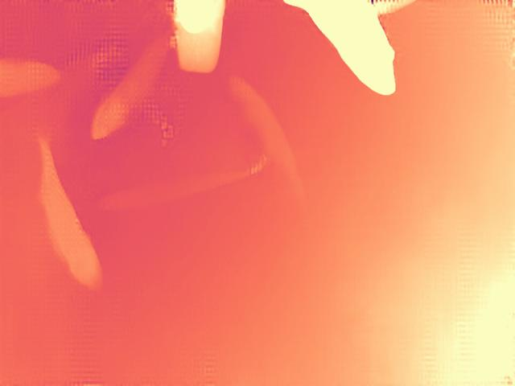

SalmoSonar Visión
datasets · videos · predicciones · atención
Datasets / Stereo Fish BézierFusion /
dataset1/rgb/01.jpg

etiqueta del dataset
predicción del modelo
etiqueta a revisar
extremo 1control 1control 2extremo 2
Mapa de profundidad que trae el dataset

Predicción en vivo
Envía la imagen al servicio de visión (http://127.0.0.1:8601) y dibuja cajas y probabilidades en el visor.
Etiquetas (2)
| # | Clase | Caja px | Largo px | Alto px | Revisión |
|---|---|---|---|---|---|
| #1 | fish | 822×238 | 771 | 390 | comparte 3 puntos con otro pez |
| #2 | fish | 667×133 | 555 | 183 | comparte 3 puntos con otro pez |
Largo según el esquema bezier: curva de Bézier por los 4 puntos. Con la calibración estéreo se convierte a centímetros (ml/salmosonar_cv/measure/stereo.py).
Embebible en la interfaz 3D: http://127.0.0.1:3800/vision/embed/datasets/bezierfusion/images/0